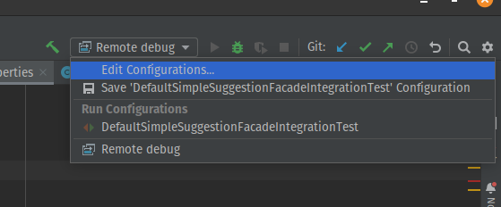
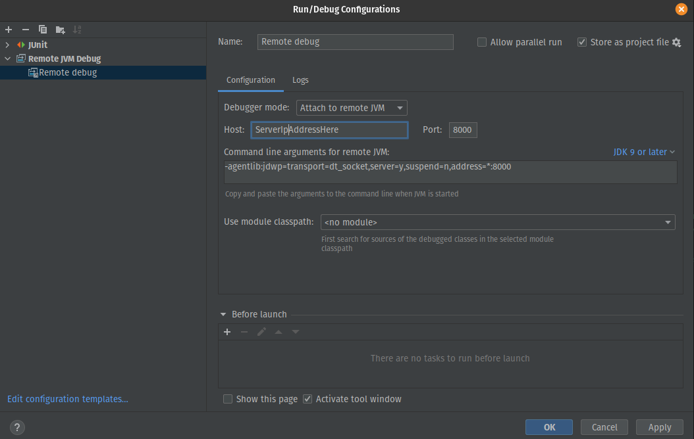
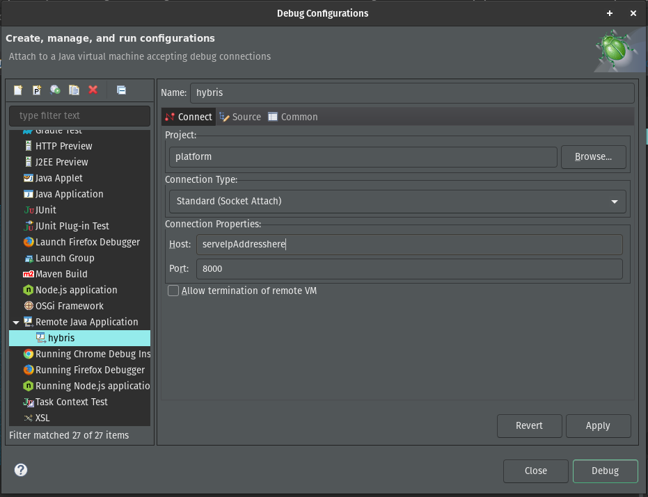
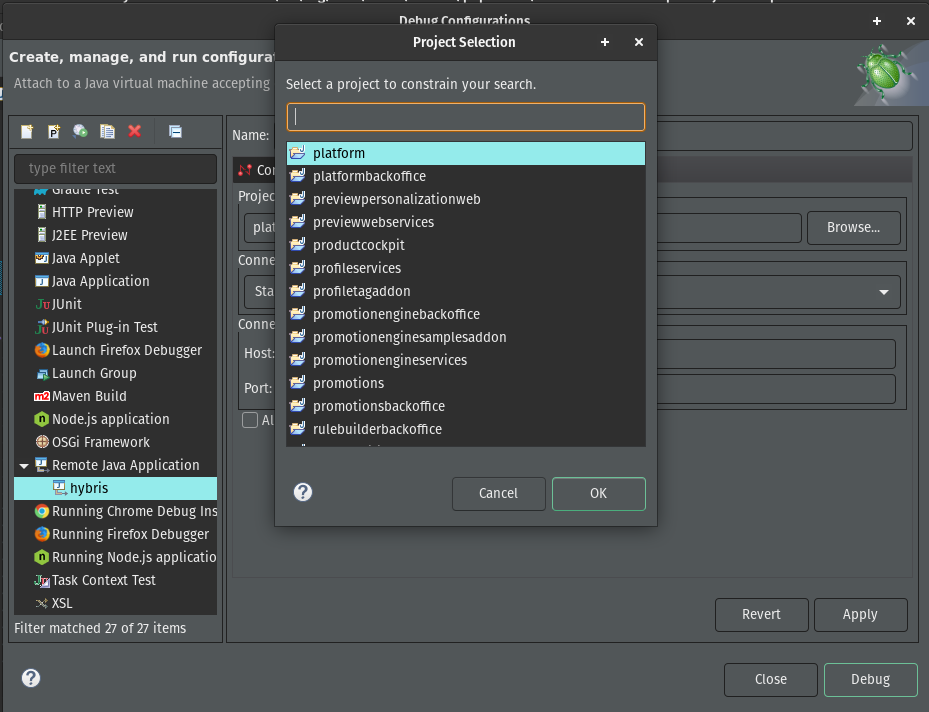
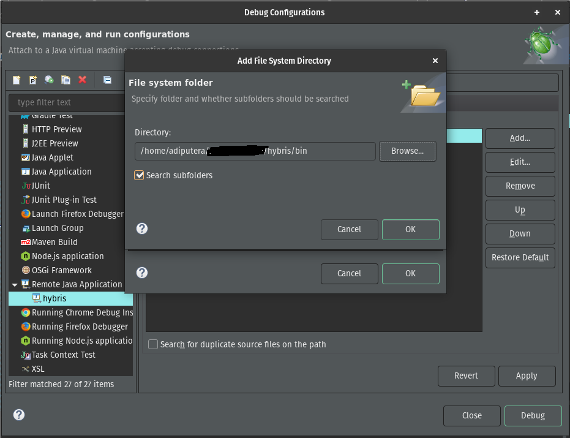

The background:
In my experience, sometimes bugs only occurs on some environment, and I can't reproduce the issue in local environment, the only way to see what went wrong is to do remote debug the application server.
The Goal:
This blog will guide you on how to do remote debugging on SAP Commerce instance. I will cover how to do remote debugging in IntelliJ IDEA as well in eclipse.
Remote debugging let you inspect running code, what is the value of variables in code, and determine what is the result of some method.
Prerequisites:
- Basic knowledge in SAP Commerce
- Basic knowledge in application debugging
- Have a direct access to application server on port 8000 (or other port if you didn't want to use port 8000), please consult to your infra team for server access.
- Have an SSH access to server, or pipeline to start the server in debug mode
The first step
These steps will cover how to setup application server so it can be debugged remotely.
- Add following property to local.properties on server:
tomcat.debugjavaoptions=-Djava.locale.providers=COMPAT,CLDR -Xdebug -Xnoagent -Xrunjdwp:transport=dt_socket,server=y,address=*:8000,suspend=nTo add the config, you can either SSH to the server and add it manually, or re-deploy with the above config added. You need to do build (ant all) after you add above config.
If you want to change the debug port, you can change 8000 to any port you like.
- SSH to application server, and start the server in debug mode by executing ./hybrisserver.sh debug or hybrisserver.bat debug
- Make sure you have the same code as the server, do build (ant all) in your local environment
- If your environment is running on clustering environment, I recommend stopping all other node apart from the one you are debugging. Or if it's not possible to stop all other node, you can isolate application server that we are using from load balancer, so no request will be coming to that server, then to reproduce the issue, you can access storefront directly using app server's IP address.
How to debug on IntelliJ IDEA?
These steps will cover on how to connect IntelliJ IDEA to remote server and do debugging
- Edit configuration of remote debug, as shown in the picture below:

- In debug configuration window, change Host to IP address of the server, and port if you change
the port number in the first step above.

- Start debugging, add some breakpoints, just like debugging your local machine.
How to debug on Eclipse?
These steps will cover on how to connect Eclipse to remote server and do debugging
- On eclipse, click on menu Run -> Debug configurations...
- Double click on Remote Java Application to create new debug configuration
- Give name whatever you like, here I give name hybris. On the Connection Properties, put server's
IP Address to Host

- On project section, click on browse, and select platform

- On source tab, click add -> choose file system directories -> select you bin folder

- Back in Debug Configuration window, click Apply, then click Debug to start debugging.
- Start debugging, add some breakpoints, just like debugging your local machine.
Conclusions
Remote debugging application server is pretty easy, the steps are almost identical to debugging local environment, with the only difference is we need to have direct access to application server and be able to start it in debug mode, other than that, the steps are the same.
Please let me know in the comment if you have any feedback, or any question. You might also check other blogs about SAP Commerce.
Or you might want to check answers.sap.com on SAP Commerce or SAP Commerce Cloud topic.
Originally published at SAP Community.